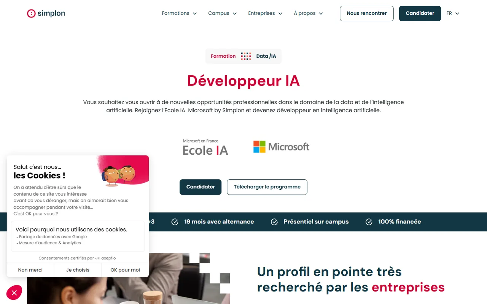

Plus de 70 % des personnes formées et diplômées sur l'IA en France le sont à un niveau bac+5 ou plus (source LinkedIn). À l'heure de l'IA générative, et surtout pour les PME, ce n'est pas seulement d'experts ultra-pointus dont on a besoin : ce sont de bons artisans. Le diplôme Développeur IA, porté par Microsoft × Simplon depuis 2018, a prouvé que c'est ce profil-là qui répond au besoin.
La France forme aux extrêmes : 70 % des diplômés IA sont à bac+5 et plus. Or l'IA générative ne se déploie pas qu'avec des PhD : elle a besoin d'artisans capables de l'intégrer dans le quotidien des PME et des collectivités. C'est ce niveau intermédiaire qui manque.
Le diplôme marche. La question, désormais, est de lui faire franchir le palier des dizaines de milliers de diplômés. Les écoles ne suffiront pas. Il faut que les politiques publiques s'en emparent. C'est le seul cofinancement qui peut transformer ce modèle artisanal en réponse de masse pour le quinquennat.
La page officielle du diplôme RNCP niveau 6 « Développeur·euse en IA », porté par Simplon avec le soutien de Microsoft.
